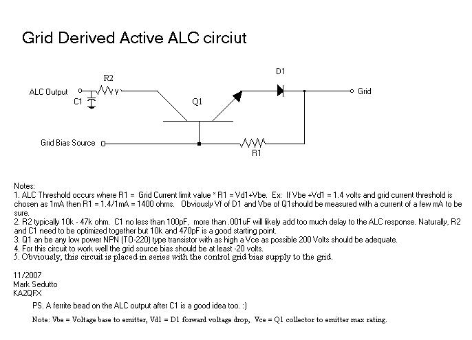

This amp is a pair of grid driven tetrodes rated at 1250 watts input. Originally using two 4CX300s I've re-tubed it to use 4CX250Bs for their greater
availability. I won't describe the amp in detail here as there's nothing remarkble about it's design except to say that it has more headroom than the 1250 watt
rating would indicate and it's very clean.
What may be of interest to some is the active ALC circuit I've incorparted into it. Being a strictly Class AB1 amp it is imperitive to never drive it
beyond zero bias. Hence, I've installed the following simple ALC circuit which monitors the grid current and backs off the exciter before any damage can
occur. It is especially useful when tuning up, as I simply raise the drive until some ALC is developed and let the ALC control the exctier while
I peak the output at FULL DRIVE; without worrying about my grids.
While I don't recommend using ALC as a method of compression on SSB I have found that this circuit resonse is descibed is quick enough and sufficiently damped
that I do not produce a lot of ALC distortion splatter as I've heard from some stations. ALC behaves very much like any servo controller system where loop gain
and minimal low pass filtering are key to getting proper response. I had to play with R2 and C1 to get acceptable response. Different radios will of course
exhibit differing ALC response gain and so this circuit will require tweaking. I suspect keeping my ALC action at a minimum, and compressing my audio BEFORE the exciter
helps in that regard. But, even running a mic straight into the exciter it sounds OK. YMMV.
